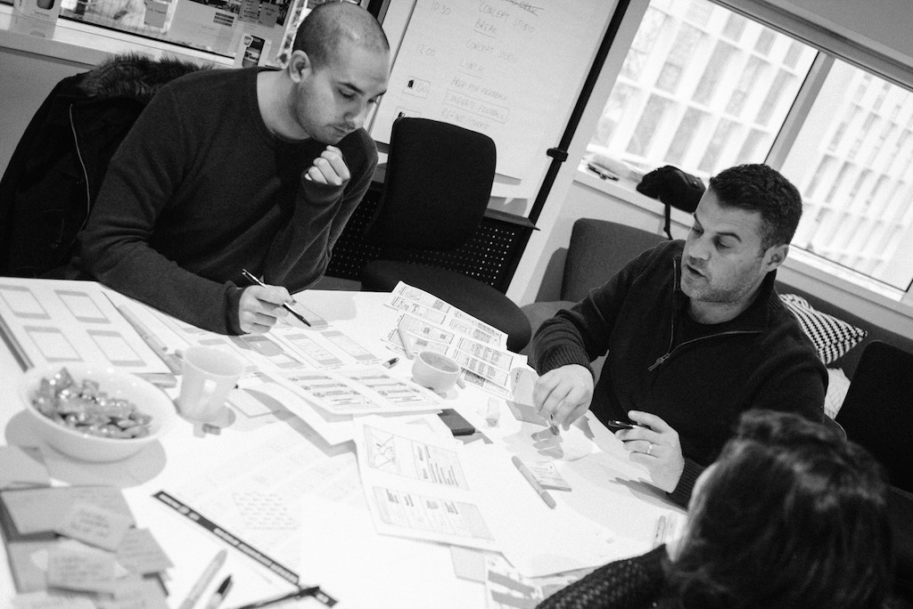

The process
I've previously written extensively about our design sprint process, so if you want to see more details including some tips on how to run a design sprint, check out my post on Medim.
Our process heavily borrowed from Google’s design sprint process, but we did make some key modifications, which I cover in the article above. So here is Our process in a nutshell.
Day 1 – Unpack and immerse
The first day was spent ‘unpacking’ all the information we knew about our target audience. The stragegy team shared their knowledge gathered through Jobs To Be Done research. We had representatives form customer support and sales share their kowledge, since they spend most of their time with customers.

Us designers contributed our insights gathered through extensive user research conducted over the past couple of years.
At the end of the day we had a lot of information covering the walls of our design room which needed to be sythesised into something useful.
Day 2 – Build empathy
We took the information we shared on day 1, and set to work building empathy maps and customer journey maps. This would form the foundation of insights we would use to decide which opportunities to focus our attention on during the ideation phase.

Day 3 & 4 – Ideate and test
In order to design a solution for this target segment, we had to priritise the opportunities we identified through empathy and customer journey maps.
Once we agreed on our priorities, the team set out to design potential solutions, using the design studio method.
However, we had to work quickly – during each of the two ideation days, we had real users coming in during the afternoon to test our designs, using paper prototypes.

Day 5 – Converge
Day 5 was spent taking stock of everything we learnt during the unpacking phase, as well as from the feedback we gathered from our users.
After organising all the information, we voted on and prioritised the ideas we developed during the previous two days.

Day 6 – Prototype
With most of the decisions made, we could focus on cranking out the prototype. The only thing left to design at this point was the navigation model for the app, since we wanted the users to be able to use the app as they would in real life. We quickly put pen-to-paper to investigate possible options.

At this point, most of the team want to their day-to-day jobs, while one of my designer colleagues and I dove into prototyping the mobile application we needed to validate our idea with real users.
We designed in Sketch and prototpyed the application using Marvel.

Day 7 – Guerilla testing
The final day was the most daunting, but also most rewarding. We split into pairs and hit the streets with our prototpyed app in hand. Walking into cafes and restaurants, we tested the app with owners and shift managers.

We received a lot of feedback – some positive, and some negative, but always constructive in terms of giving us a direction to pursue.
If I learnt one thing from this guerilla testing exercise, it was that when you go out to your users unannounced, you face an altogether different type of reaction. Users are more likely to reject your idea and to provide critical feedback.
The outcome
The design sprint allowed us to come up with an innovative idea, and validate it, within the space of one week. We learnt a lot about our target audience and with the input of real users, we pivoted on a number of aspect of the product during the course of the sprint.
Since running the design sprint, we have created a spin-off company to take this product to market – that is how JoraLocal was born.

The sprint itself was a major success, now it is up to us to further refine the idea as we take the JoraLocal product to market.
On a personal note...
Personally, I gained a lot from the sprint, as did most of those who participated. Many of the techniques we used during the week have become part of my personal design process, and I have been able to run simplified design sprints for a couple of my freelance clients.